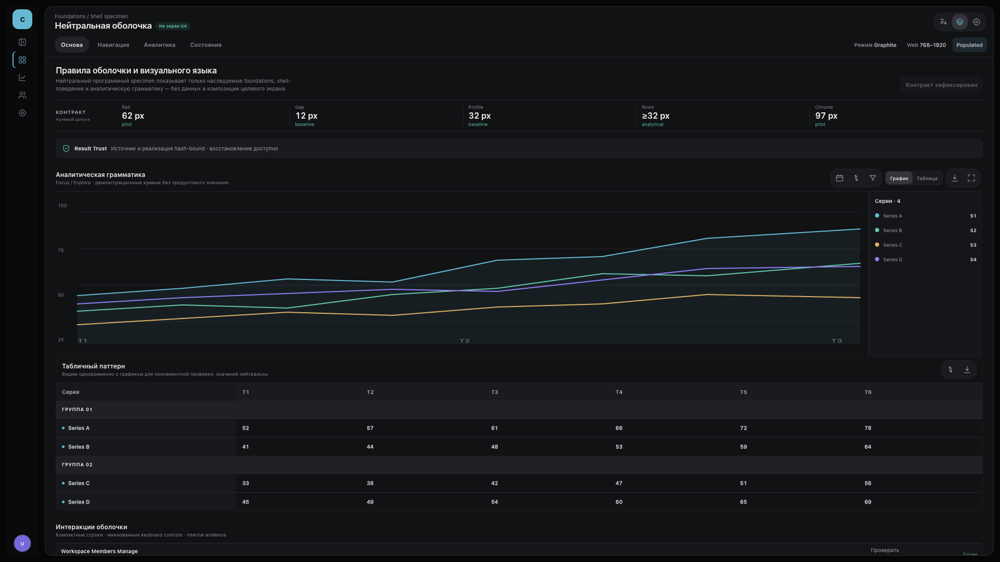
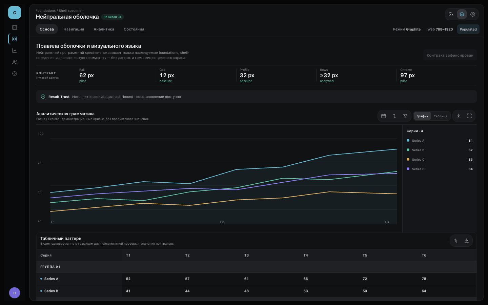

G3 · compatibility reproof
Точное наследование оболочки
Что изменилось относительно принятого G3 r3: только четыре демонстрационные action-кнопки теперь получают один точный паттерн пилота целиком. Прежнее объединение взаимоисключающих button-вариантов устранено. Архитектура оболочки, палитра, контент, маршруты и responsive-композиция не переосмыслялись.
Открыть интерактивную оболочку · Сравнить с ранее принятой G3 r3




- source_native
- source_anchor
- source_anchor
- source_anchor
- source_anchor
- candidate
- candidate_anchor
- candidate_anchor
- candidate_anchor
- candidate_anchor
- render_provenance
- render_provenance
- render_provenance
- render_provenance
- inheritance
- standard_conformance
- screen_contract